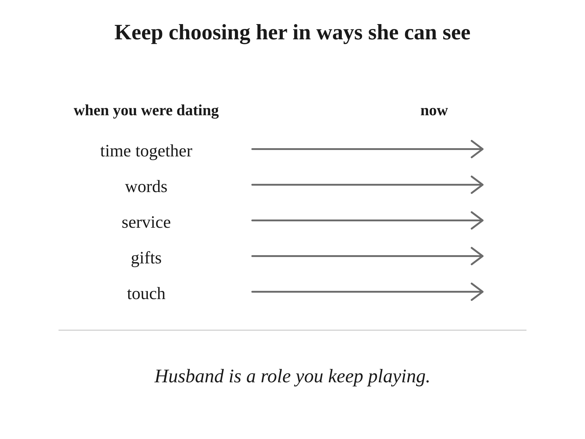

There’s a difference between the time you gave your wife and the time she actually got. The gap between those two is small enough to miss for years.
She asks if you want to watch a show together. You sit down beside her, and your phone stays in your hand. Halfway through she laughs at something and looks over to see if you caught it. You didn’t.
Another night you take her to dinner. You chose the place and made the reservation. Then you spend most of the meal turning over a problem at work. You answer her questions. You aren’t really there.
You made time for her both nights, and that counts for something. What she wanted was your attention, and you had it somewhere else.
Think about how you acted when you were still hoping she’d say yes to another date. You paid attention to what she enjoyed. You remembered the story about her friend. You noticed the thing she mentioned liking once, and you still remembered it a week later. You asked her questions because you wanted the answers.
Marriage lets you relax, and that’s a good thing. You can sit quietly without wondering whether she’s losing interest. You know you’ll see her tomorrow. That security is a good part of the life you built. It can also make attention feel optional, until you’re noticing less about her than you did back when you weren’t sure she’d stay.
So you worked to learn her, then treated the wedding as proof you’d finished. You still love her, and you probably still do plenty for her. What stopped was your curiosity about who she is now.
Epictetus has a rule for this in his Handbook, the Enchiridion: “Duties are universally measured by relations.” (Enchiridion 30, Long trans.) He was writing about fathers and brothers, but the rule fits a husband. Husband is a role you keep playing, not a title you won once. If you want to be her husband, keep being her husband. You were her suitor before she said yes, and that job stayed open. Saying you loved her on your wedding day was easy. Noticing her the following spring took effort. This Saturday it costs you an afternoon with the phone in the drawer, and that’s how she knows you chose her.
Say you’re twelve years into your marriage and you decide to take her out. You want to arrange the whole thing yourself.
The first place that comes to mind is the Italian restaurant she loved when you were dating. Then you try to remember the last time she ordered pasta, and you can’t. You know what she liked at twenty-six. You can’t name one thing she’d be excited about this Saturday.
So you ask her. She says she’d rather drive out to the lake town an hour north, walk around, and stop wherever looks good. Then she tells you why. She’s been saving pictures of a garden she wants to build along the back fence, and there’s a nursery up there she’s been reading about.
You didn’t know that. She’s been mentioning small pieces of it for months, and you’ve been hearing her the way you hear the radio.
The date is the easy part. The following Tuesday, you ask where the first bed is going, and she takes you out in the dark with her phone light to show you the corner she’s picked. Nothing about that evening was on the calendar. It happened because you finally heard about the garden, and then asked about it again.
She’s changed across the years you spent in the same house. You’ve changed too. Asking is useful. Remembering the answer is what she notices.
When your attention drifts, she can tell you’ve stopped noticing her. Because you assume she’ll always be there, she’s the one who gets left out of your thinking. The plain word for that is being taken for granted, and it feels like being furniture in her own marriage: known, needed, walked past.
She stops mentioning what she wants, because bringing it up twice was already more than she wanted to do. She organizes her own birthday. She says “whatever you want” because choosing got her nowhere the last three times. She never announces any of it. You end up with a wife who has gotten used to asking for less.
When you finally start asking again, she may not open up the way you pictured. Give it time. She’s working out whether this is a change or just an evening.
If she wants to watch a show, put the phone in a drawer. Whether or not you love the show, you can enjoy sitting beside her, seeing what makes her laugh, and letting an hour belong to the two of you. At dinner, the problem at work can wait until the drive home.
Some nights she wants to tell you about her day. Some nights she wants your company while neither of you says much. You can tell which one it is when you’re paying attention. If your mind wanders, come back to the table. You won’t give her every minute perfectly, but you can give her the evening you offered.
She handled something hard this week and you noticed. She won’t know you noticed unless you say so. The same goes for the work nobody else saw, and for the moment you looked over and thought she was beautiful. Familiar affection doesn’t get less true because you’ve said it before.
When you’re paying attention, you see the errand she mentioned and the week that wore her down before she has to name either one. You can’t do anything about what you never saw.
Esther Perel is a therapist who writes about desire in long relationships. Her argument is that familiarity can settle into routine, and that curiosity and new experience help keep desire alive. Leave room for the woman beside you to surprise you. Some of what she wanted when you met still matters to her. Some of it doesn’t, and she may not have announced the difference.
In 2009, Tsapelas, Aron and Orbuch looked at married couples who had been followed for sixteen years. Spouses who said their marriage felt boring in year seven were less satisfied with it nine years later. That held even after the researchers adjusted for how satisfied each spouse already was in year seven. It shows the two travel together; it doesn’t show which caused the other. The study only included couples still married at year sixteen, so it tells you nothing about divorce. The show you watch every week can be familiar and good. Guard against going through every shared hour as though there were nothing left to find out.
Put the phone down, and give her the evening you came to share.

Putting into Practice
Mechanism: Keep learning her after you’ve won her
Conversation sentence: You can love your wife and keep doing things for her, and still have stopped being curious about who she is now.
Pursuit after marriage is interest: the attention you give her while you’re together and the curiosity you keep about who she’s becoming. Before she said yes, you noticed what she liked and remembered what she told you. Marriage made that feel optional. Twelve years in, planning a date, you can find you no longer know what she’d want, because you stopped learning about her somewhere along the way. When your attention drifts, she can tell you’ve stopped noticing her. She feels taken for granted, needed and walked past, and she starts asking for less. Put down the phone and be in the hour you offered. Ask about her, and remember the answer. Notice what she handled and say so. You can’t do anything about what you never saw. Familiar routines can be good; a marriage still needs room for her to surprise you.
Lesson: Winning her was the start. You keep choosing her by staying curious about who she is now.
Challenge: Name one thing she’d be excited about this Saturday. If you can’t, ask her, and ask about it again later in the week.